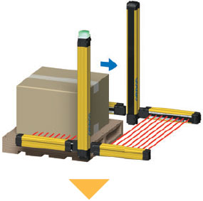
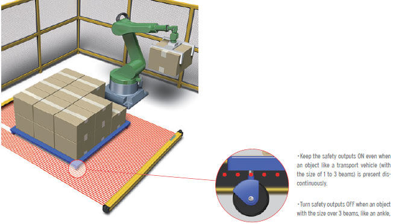
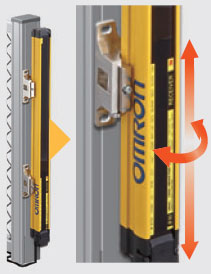

Previously it took time to select the right safety light curtains for the conditions: physical conditions such as size and operating range, ambient environments, and countries.
If just one single safety light curtain can be used in a variety of environments, the time required for selection, installation, and maintenance can be reduced.
Building Automation
Industrial Automation
Power Automation & Safety


Bangladesh Distributor
F3SG-R
Safety Light Curtain

New Standard of Safety Light Curtain, Offering Both Robustness and Reliability

Troubleshooting and Setting Tool downloads
Select the indicator status to see the error cause and solution. And download Setting Tool SD Manager2.
about this Product Family
Related Contents
- Safety Sensors
- Special Contents
- Features
- Lineup
- Specifications
- Dimensions
- Catalog
last update: July 01, 2016
Next generation safety light curtain packed with powerful features, offering both robustness and reliability
Easy Selection & Design
Robustness
Allows use in a variety of environments
Protects itself and production sites
Robust and Compact | Robust housing |
All models are equipped with a robust housing that can be used in harsh conditions and withstand shocks caused by sudden human contact or a dropped tool. The scratch-resistant material is used for the optical surface to prevent unexpected machine stops.
[Downsized]
The robust housing can be used in harsh conditions and withstand shocks caused by sudden human contact or a dropped tool. The scratch-resistant material is used for the optical surface to prevent unexpected machine stops.
In almost any environment | For global use |
The F3SG-R is designed to be used in a variety of environments around the world, conforming to international sta
[Previously…] Mixing several models
Several types of safety light curtains with different environmental resistance and functionality were required to suit the installation environment. It took time to select the right models.
New Muting Functionality
Increases both productivity and safety
Easily distinguishes between workers and objects
Increasing both productivity and safety | Muting function |
The F3SG-R provides advanced Muting function that detects the zone where workpieces pass or the position of a machine or robot and disable beams of the detected part. This increases both safety and productivity.
By adding the smart muting actuator, the F3SG-R provides stable operation even for the production lines where errors occur due to vibration caused by the passing workpiece.
The point detection muting sensor mistakenly disabled muting while a workpiece was passing, which led to unexpected machine stops.
The muting actuator detects the surface of a passing workpiece. Even if a workpiece moves due to vibration, muting is kept enabled until the workpiece has passed. This prevents unexpected machine stops.
Adjustment time reduced by 80%* | Smart muting actuator |
The use of the dedicated actuator can significantly reduce the time required to adjust the sensor to detect workpieces even in unstable conveying conditions
* Compared to the previous model (Based on OMRON investigation in September 2014)
[Previously…] Many processes including programming and adjustment were required
Since bypass processing to disable the safety light curtain was performed via the PLC, programming before installation required time and work. It also took a lot of time and work to install and adjust many muting sensors (sensors and reflectors).
Powerful Features
Prevent unexpected machine stops
Ensure stable operation
Auto-configuration of muting zone | Dynamic Muting |
When workpieces with various heights are conveyed on the same line, partial muting is automatically performed based on the height of the workpiece. This advanced muting function can automatically perform normal detection at the zone where a workpiece does not pass.
1. When the muting sensor detects that a workpiece passes, all beams are muted.

2. The only beams interrupted by the workpiece are kept muted and other beams are released from the muting state
three seconds after the workpiece pass through the safety light curtain. Muting is disabled after the workpiece has
passed.
three seconds after the workpiece pass through the safety light curtain. Muting is disabled after the workpiece has
passed.
Minimizing setting and detection errors | Configuration Tool SD Manager2 |
The function to log the muting sensor operating conditions of the F3SG-R visualizes the installation position and setting conditions of the sensor to achieve reliable configuration. The stop due to the muting error can be analyzed using the data stored in the F3SG-R. Quick identification of the cause can reduce unexpected machine downtime.
Detecting both objects and workers | Reduced Resolution |
With the Reduced Resolution function that is used to change the number of interrupted beams (1 to 3 beams), the F3SG-R can detect human entry while workability is maintained. This makes easier to distinguish between objects and workers.

Ensuring safe restart | Pre-reset |
The Pre-reset function prevents possible accidents and supports safe restart of machines. Even if an worker press the reset switch of the safety light curtain without noticing another worker near the robot, restart will not be executed unless certain conditions are met.
Preventing accidental stops due to insects | Response Time Adjustment |
This function is used to distinguish between an instant passing of a small object such as an insect and a human passing by changing the time to respond to the block of the beam. Accidental machine stops can be avoided.
Easy Set-up
Wiring, Beam Adjustment, and Operation Check
Facilitate installation
Smart
No torque control required | Smartclick |
Smartclick connectors are used to quickly connect cables. Just turn the round waterproof M12 connector 1/8 of a turn. This stress-free connection reduces time required for wiring and replacement when many devices are connected together.
This popular connector is used for a variety of OMRON products to reduce time required for wiring and replacement when many devices are connected together.
[Previously…] Faulty connection and need of torque control
When many safety light curtains were connected, torque control of connectors was required and delay in set-up occurred due to failure of connection. The Smartclick connector can be connected with the existing screw-type M12 connector.
Long-distance wiring | Maximum 100 m cable length |
The total extension cable length is up to 100 m. Flexible wiring maximizes long-distance detection and optical synchronization functionality.
Simple wiring | Simple wiring connector |
Simple wiring connector can reduce wiring time. Fewer cables mean that the risk of disconnection and noise troubles can also be reduced.
No limitation in wiring | Optical synchronization |
Optical synchronization eliminates the need of synchronization wiring between the emitter and receiver. Flexible wiring enables reducing disconnection risk and avoiding noise sources.
[Previously…] Limitations imposed by synchronization wiring
- Wiring and connection works between the emitter and receiver were required.
- With the previous synchronization function, if the Top or Bottom beam was blocked, synchronization was not maintained.
Simple two steps | Beam adjustment |
The benefit of robust, torsion-resistant housing contributes to reduce the time required to install the safety light curtain.
Beam adjustment can be done easily by checking the TOP and BTM LED indicators. The SD Manager 2 helps install the safety light curtain by showing the incident light levels of each beam.
1. Adjustment is completed when the TOP, BTM, and STB LED indicators turn ON.
2. Finer adjustments can be made using the Configuration Tool SB Manager2.
Easy adjustment after mounting | Mounting bracket |
Two types of mounting brackets are available.
Standard fixed bracket

After mounted on a safety fence, the F3SG-R can be slid vertically to adjust. This means this mounting bracket allows for a wider adjustment range than the existing top/bottom mounting bracket.
Standard adjustable bracket (sold separately)

In addition to vertical adjustment, the angle can be adjusted up to ±15°.adjusted up to ±15°.
Standard fixed bracket The bracket is included in the F3SG-R.
Stable Operation
Troubleshooting and Predictive Maintenance
Eliminate machine downtime to ensure stable operation
Quick
For global operators | Multilingual troubleshooting |
Troubleshooting in eight languages is published on the website to find causes and solutions of errors that occur during operation. Operators across the world can check the error details in their local languages, which will help them minimize time to troubleshoot.
Reducing stops due to mutual interference | Operating Range Selection |
When other sensors are installed near the F3SG-R, Operating Range Selection helps reduce mutual interference.
Mutual interference with the other sensor near the F3SG-R can be reduced by changing the mode from Long * to Short (7 m).
*. Maximum operating range of 20 m for hand/arm protection or 10 m for finger protection
* The Interface Unit F39-GIF is required to connect with a personal computer.
Quick troubleshooting | Data logging 1 |
The error logs stored in the F3SG-R can be obtained by connecting with a personal computer via the interface unit. The Configuration Tool SD Manager2 analyzes error logs to identify causes of errors and suggest solutions. This helps simplify troubleshooting.
Systematic maintenance based on trend management | Data logging 2 |
By using the Configuration Tool SD Manager2, the data of light intensity, power-ON time, and switching frequency of the F3SG-R can be collected regularly to predict when systematic and preventive maintenance is required.
[N E W] Easy type
Easy-to-use safety sensor
Ideal for Simple On/Off Detection Applications
Robust but slim housing and basic safety functions are inherited from the F3SG-R Advance type.
Providing only simple safety functions, the Easy type helps save TCO (Total Cost of Ownership) by reducing errors that required a lot of time to identify the causes.
Only four wires are required for the minimum configuration, which is as simple as wiring a photoelectric sensor. Simple connection with a safety controller makes it easy to build a safety circuit. Commercially available M12 connector cables can be used for extension cables.
The Easy type that allows the distance between the light curtain and hazard source to be reduced is best suited to use in a small machine.
last update: July 01, 2016